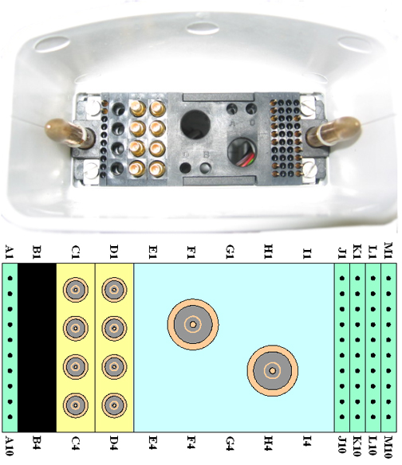
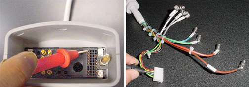
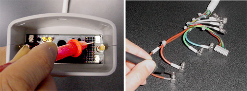

Operating Documentation
Direction 5500113, Rev# 3
Discovery MR450 1.5T Service Methods
Module Version 4.0, Version Date 12/7/09
Operating Documentation |
| Required Persons | Procedure |
| 1 | 30 min |
Required Persons: 1
The following tips can be used to troubleshoot common problems with the 1.5T 8-Channel CTL Coil.
Digital Multi-Meter
Refer to 1.5T 8-Channel CTL FRU List for FRU part numbers.
The following coil configuration names must be installed to run the SNR tool:
8CTL12
8CTL23
8CTL34
8CTL45
8CTL56
Problem:
You are unable to pre-scan or are scanning and yet receiving no signal.
Possible Solution:
Verify the green light above the port that is plugged into is illuminated. This indicates the coil is properly plugged into the system.
Verify that the system has correctly detected the coil by checking in the Currently Connected in the GUI to select coils in Prescription, as shown in the example in Illustration 1.
Verify that the system has correctly detected the coil by checking in the Currently Connected in the GUI to select coils in Prescription, as shown in the example in Step .
Illustration 1: Currently Connected Coils Window in the Scan Screen

Verify that the landmark is correct, see 8-Channel CTL Coil Setup for Coil SNR Test for information on Landmarking.
Verify that the scan locations and any FOV offsets are correct.
Perform a continuity check on the external cable check (Section 4.4). The continuity check must be performed by a GE authorized Service Engineer.
Verify that the coil is positioned with the cable exiting towards the bore.
Verify that the cable is not looped or crossed.
This coil is compatible with A, B or C (if present) system ports. Try scanning in multiple ports.
If you still cannot get a signal, try to scan (transmit and receive) with the body coil. For this test, be sure to remove the CTL coil from the magnet bore before you scan with the body coil. If you still receive no signal the problem probably lies with the MR system. If the scan completes successfully, there is probably a problem with the 8-Channel CTL coil. Contact GE for further assistance. If you are unable to scan with the substitute coil, there may be a system problem related to this particular coil type.
Problem:
Poor IQ, shaded images, or SNR fails.
Possible Solution:
Perform a continuity check on the external cable (Section 4.4, external cable check). The continuity check must be performed by a GE authorized Service Engineer.
Verify that there are no loops in the cables.
Verify that there are no metal or ferromagnetic objects close to the coil, patient or magnet (i.e., safety pin, hair pin).
Verify that the coil is properly positioned.
Verify that your center frequency is within the frequency adjustment range for your system.
Verify that the R1, R2 and TG values from the pre-scan are within normally expected ranges.
If you have not done so already, perform the Multi-Coil Quality Assurance (MCAQ) test (refer to Operator’s Manual 2415427). If the values you obtain do not fall within normal operating parameters, investigate this further by performing a phantom scan with the body coil. For this test, be sure to remove the imaging coil from the magnet bore before you scan with the body coil. If you still have the same problems, there is probably an MR system problem. If the body coil scan is satisfactory, acquire a scan using another coil of the exact same type (receive-only, phased array) and the same system coil selection. If the image quality is visibly improved, there may be a problem with the 8-Channel CTL coil. Contact GE for further assistance. If the image quality still suffers, there may be a system problem related to imaging with this type of coil.
Problem:
There is a black line or signal void on the image.
Possible Solution:
Verify that there is no metal present in the area being scanned in or on the patient.
Before removing the cable assembly from the coil, visually inspect all coaxial connectors and pins on the coil connector. Illustration 2 shows the pin layouts of the system side coil connector. The connector of the CTL coil has 2 pins in column A, 8 pins in column J, 7 pins in column M, 4 RF coaxial connectors in column C, and 4 RF coaxial connectors in column D. If there are any broken, deformed or recessed pins or coaxial connectors, perform Cable Replacement.
| ||||
| Under no circumstances should the continuity of the center pin of the coax connectors be measured. They may be extremely fragile when improper tools are used. | ||||
Illustration 2: Pin Layouts of the HD System Side Connector (Hypertronics) Connector

Step 1 – Remove the cable assembly from the coil as described in Cable Replacement.
Step 2 – There are six pins (J1 to J6) in column J (see Illustration 2) connecting to DC wires of the cable. Table 1 shows these pins and corresponding DC wires. Use a Digital Volt Meter (DVM) to check the resistance between the pin in column J and the corresponding DC wire (see Illustration 3). The resistance should be 5.6 ± 0.5 ohms. If any resistance reading is not within this range, perform Cable Replacement.
Table 1: Pins and Connected DC Wires
| Pin in Column J | 1 | 2 | 3 | 4 | 5 | 6 |
| DC Wire Color | Blue | Purple | Yellow | Green | Brown | Red |
Step 3 – Check if any pin from J1 to J6 (see Illustration 2) is shorted to the ground. The outside conductor of a coaxial connector in column C or D (see Illustration 2) can be used as ground. If any pin is shorted to ground, perform Cable Replacement.
Illustration 3: Measure the Resistance of the DC Line

The pin M3 is connected with eight RF cables. The system supplies the preamp bias voltage through pin M3 and RF cables to the coil. Referring to Illustration 2 and Illustration 4, find pin M3. Use a DVM to check resistance between pin M3 and the central pin of the SMB connector at the end of each RF cable (see Illustration 4). The resistance should be 5.6 ± 0.5 ohm. If any resistance reading is not within this range, perform Cable Replacement.
Illustration 4: Measure the Resistance of the Preamp Bias Line

No finalization is needed.